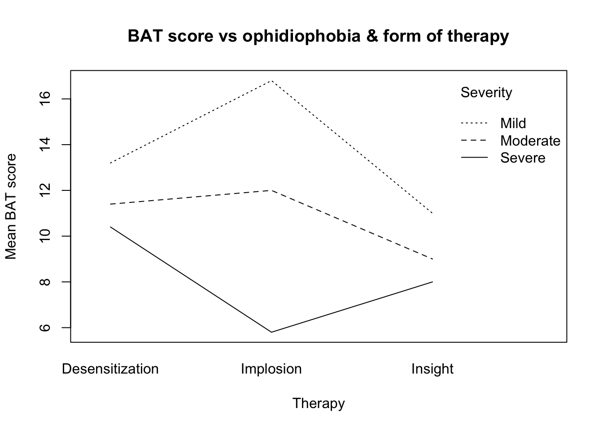
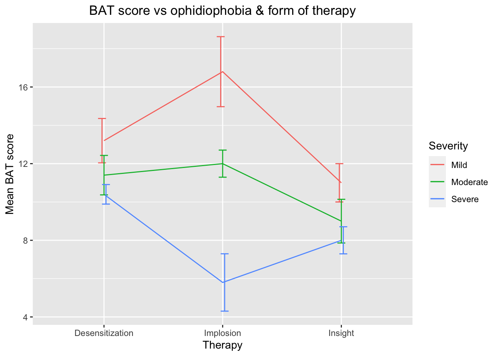
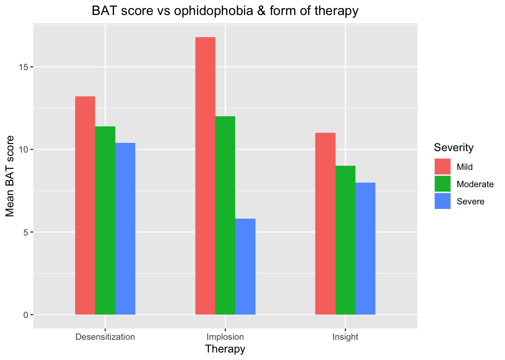

A psychologist is interested in testing three types of therapy for modifying ophidiophobia (fear of snakes). She suspects that one type of therapy may not be best for everyone - rather the best type of therapy may depend on the severity of the phobia.
Undergraduate students in an introductory psychology course are given the Fear Schedule Survey (FSS) to screen out subjects showing no fear of snakes. Those displaying some degree of phobia are classified as mildly, moderately, or severely phobic. One third of subjects within each level of severity are then randomly assigned to a treatment condition: systematic desensitization, implosive therapy, or insight therapy.
What follows is an analysis of BAT scores following therapy for snake phobia (higher scores are better, indicating less phobia):
snake <- read.csv('snakedata.csv')
severity_levels = c('Mild', 'Moderate', 'Severe')
treatment_levels = c('Desensitization', 'Implosion', 'Insight')Since these data were collected under a 3x3 between-subjects factorial design, we need to perform a 2-way ANOVA in order to analyze the results. Before performing an ANOVA, however, we need to ensure that the dataset does not violate the assumptions of the test.
We can check for violation of the assumption of normality using the Shapiro-Wilk test (on each of the 9 groups).
for (i in severity_levels) {
for (j in treatment_levels) {
group_data = snake$BAT[which(snake$Severity == i &
snake$Therapy == j)]
p_shapiro = shapiro.test(group_data)$p # normality test on group
if (p_shapiro > 0.05) {
cat(sprintf("p_shapiro(severity = %s;
treatment = %s) = %f (> 0.05);\n
∴ fail to reject null hypothesis that sample is
normally distributed.\n\n", i, j, p_shapiro))
}
}
}## p_shapiro(severity = Mild;
## treatment = Desensitization) = 0.954644 (> 0.05);
##
## ∴ fail to reject null hypothesis that sample is
## normally distributed.
##
## p_shapiro(severity = Mild;
## treatment = Implosion) = 0.103419 (> 0.05);
##
## ∴ fail to reject null hypothesis that sample is
## normally distributed.
##
## p_shapiro(severity = Mild;
## treatment = Insight) = 0.999803 (> 0.05);
##
## ∴ fail to reject null hypothesis that sample is
## normally distributed.
##
## p_shapiro(severity = Moderate;
## treatment = Desensitization) = 0.685296 (> 0.05);
##
## ∴ fail to reject null hypothesis that sample is
## normally distributed.
##
## p_shapiro(severity = Moderate;
## treatment = Implosion) = 0.967174 (> 0.05);
##
## ∴ fail to reject null hypothesis that sample is
## normally distributed.
##
## p_shapiro(severity = Moderate;
## treatment = Insight) = 0.691856 (> 0.05);
##
## ∴ fail to reject null hypothesis that sample is
## normally distributed.
##
## p_shapiro(severity = Severe;
## treatment = Desensitization) = 0.813952 (> 0.05);
##
## ∴ fail to reject null hypothesis that sample is
## normally distributed.
##
## p_shapiro(severity = Severe;
## treatment = Implosion) = 0.737421 (> 0.05);
##
## ∴ fail to reject null hypothesis that sample is
## normally distributed.
##
## p_shapiro(severity = Severe;
## treatment = Insight) = 0.967174 (> 0.05);
##
## ∴ fail to reject null hypothesis that sample is
## normally distributed.The p-value for each Shapiro-Wilk normality test is > 0.05.
Therefore, we fail to reject all null hypotheses that the observations
are normally distributed.
We can check for violation of the assumption of equal variance using the Bartlett test.
p_bartlett = bartlett.test(BAT ~ interaction(Therapy, Severity),
data = snake)$p.value
if (p_bartlett > 0.05) {
cat(sprintf("p_bartlett = %f (> 0.05); \n
∴ fail to reject null hypothesis that
samples drawn from populations with equal variance.\n",
p_bartlett))
}## p_bartlett = 0.378506 (> 0.05);
##
## ∴ fail to reject null hypothesis that
## samples drawn from populations with equal variance.The p-value for the Bartlett test of homogeneity of variance is >
0.05.
Therefore, we Fail to reject null hypothesis that samples are drawn from
populations with equal variance.
Below we perform all omnibus tests. We test the main effect of treatment, the main effect of severity, and their interaction.
# omnibus F-tests
options(contrasts = c("contr.sum", "contr.poly"))
myaov <- aov(lm(BAT ~ Therapy*Severity, data = snake))
summary(myaov)## Df Sum Sq Mean Sq F value Pr(>F)
## Therapy 2 51.51 25.76 4.017 0.02662 *
## Severity 2 235.24 117.62 18.347 3.21e-06 ***
## Therapy:Severity 4 112.36 28.09 4.381 0.00547 **
## Residuals 36 230.80 6.41
## ---
## Signif. codes: 0 '***' 0.001 '**' 0.01 '*' 0.05 '.' 0.1 ' ' 1From this test, we can conclude that there is a significant interaction between the effect of therapy and the effect of severity at the p < .01 level. This is in line with the prediction implied by this experiment that the treatment effectiveness depends on the severity of the disorder. In other words, the effect of treatment depends on the level of severity of the phobia.
We can not, however, make any inferences about which groups are significantly different until conducting follow-up pairwise tests.
Note: There is also a significant main effect of each variable, but given that there is an interaction, which tells us that the effect of one variable depends on the level of the other, reading into these main effects is not informative.
We now conduct a post-hoc analysis of differences in group means. We have a 3-by-3 factorial design, so we will perform 36 follow-up tests (\(\left(\frac{(9 ~ \text{groups}) * 8}{2}\right)\)).
Since the experimenter in question doesn’t appear to have any predictions about what the data will show (beyond hypothesizing that the effect of one variable depends on the level of the other), we cannot plan our comparisons in advance. Therefore, in the interest of minimizing type II error (i.e., failing to detect any real effects), it is most wise to conduct every possible pairwise test, accepting the cost of multiple comparisons correction.
To conduct every pairwise comparison and also control for type-I error, we can use the Tukey test:
# compute Tukey test to perform all pairwise comparisons w/
# built-in multiple comparison correction
tukey_test = TukeyHSD(myaov, which = "Therapy:Severity", data = "snake")
# identify and store indices of all significant pairwise tests
sig_tests = c()
for (i in 1:36) {
if (tukey_test$`Therapy:Severity`[i, "p adj"] < 0.05) {
sig_tests = c(sig_tests, i)
}
}
tukey_test$`Therapy:Severity`[sig_tests,] # display significant tests## diff lwr upr
## Implosion:Severe-Desensitization:Mild -7.4 -12.67992 -2.1200788
## Insight:Mild-Implosion:Mild -5.8 -11.07992 -0.5200788
## Desensitization:Moderate-Implosion:Mild -5.4 -10.67992 -0.1200788
## Insight:Moderate-Implosion:Mild -7.8 -13.07992 -2.5200788
## Desensitization:Severe-Implosion:Mild -6.4 -11.67992 -1.1200788
## Implosion:Severe-Implosion:Mild -11.0 -16.27992 -5.7200788
## Insight:Severe-Implosion:Mild -8.8 -14.07992 -3.5200788
## Implosion:Severe-Desensitization:Moderate -5.6 -10.87992 -0.3200788
## Implosion:Severe-Implosion:Moderate -6.2 -11.47992 -0.9200788
## p adj
## Implosion:Severe-Desensitization:Mild 1.412159e-03
## Insight:Mild-Implosion:Mild 2.230721e-02
## Desensitization:Moderate-Implosion:Mild 4.171883e-02
## Insight:Moderate-Implosion:Mild 6.793105e-04
## Desensitization:Severe-Implosion:Mild 8.249777e-03
## Implosion:Severe-Implosion:Mild 1.645513e-06
## Insight:Severe-Implosion:Mild 1.050373e-04
## Implosion:Severe-Desensitization:Moderate 3.063428e-02
## Implosion:Severe-Implosion:Moderate 1.156835e-02All significant Tukey tests (at the p < .05 level) are displayed above.
# visualize interaction as line plot
interaction.plot(x.factor = snake$Therapy,
trace.factor = snake$Severity,
response = snake$BAT,
xlab = 'Therapy', ylab = 'Mean BAT score',
trace.label = 'Severity')
title(main = "BAT score vs ophidiophobia & form of therapy")
# calculate means of each group
mean_snake = aggregate(snake[, 1],
list(Therapy = snake$Therapy,
Severity = snake$Severity),
mean)
colnames(mean_snake)[colnames(mean_snake) == "x"] <- "BAT"
# calculate standard error of each group
se_snake = aggregate(snake[, 1],
list(Therapy = snake$Therapy,
Severity = snake$Severity), sd)
colnames(se_snake)[colnames(se_snake) == "x"] <- "BAT"
n_obs = length(snake$BAT[which(snake$Severity == "Mild" &
snake$Therapy == "Desensitization")]
) # obs per group
se_snake$BAT = se_snake$BAT / sqrt(n_obs)
# add error bars
library(ggplot2)
line_plot <- ggplot(data = mean_snake,
mapping = aes(x = Therapy,
y = BAT,
group = Severity,
color = Severity)) +
geom_line() +
geom_errorbar(aes(ymin = BAT - se_snake$BAT,
ymax = BAT + se_snake$BAT),
width = .2,
position = position_dodge(0.05)) +
# theme_classic() +
labs(y = "Mean BAT score") +
ggtitle("BAT score vs ophidiophobia & form of therapy") +
theme(plot.title = element_text(hjust = 0.5))
print(line_plot)
# plot the same data using a bar graph
bar_plot <- ggplot(data = mean_snake,
aes(x = Therapy,
y = BAT)) +
geom_bar(data = mean_snake,
aes(fill = Severity),
stat = "identity",
position = "dodge",
width = .5) +
labs(y = "Mean BAT score") +
ggtitle("BAT score vs ophidophobia & form of therapy") +
theme(plot.title = element_text(hjust = 0.5))
print(bar_plot)
Based on these results, we can make a number of inferences:
For instance:
Implosion therapy BAT scores are significantly higher than insight therapy BAT scores for individuals with moderate ophidiophobia (p-adj = 2.230721e-02), suggesting that implosion therapy is more effective than insight therapy for individuals with moderate ophidiophobia (note that this effect appears to be reversed for individuals with severe ophidiophobia, although this is only a trend as the difference is not significant);
Implosion therapy BAT scores are significantly higher for individuals with mild and moderate ophidiophobia than those for individuals with severe ophidiophobia (p-adj = 1.050373e-04; p-adj = 1.156835e-02), suggesting that implosion therapy is more effective for individuals with mild ophidiophobia than with moderate or severe (this effect is probably compounded with the main effect of severity - i.e., individuals with more mild ophidiophobia have higher BAT scores overall).
It is interesting to note that the effect of therapy for individuals with severe ophidiophobia appears to be in the opposite direction of that for individuals with mild and moderate ophidiophobia. This finding lends support to the experimenter’s hypothesis that the effectiveness of a treatment for ophidiophobia depends on the severity of the phobia.